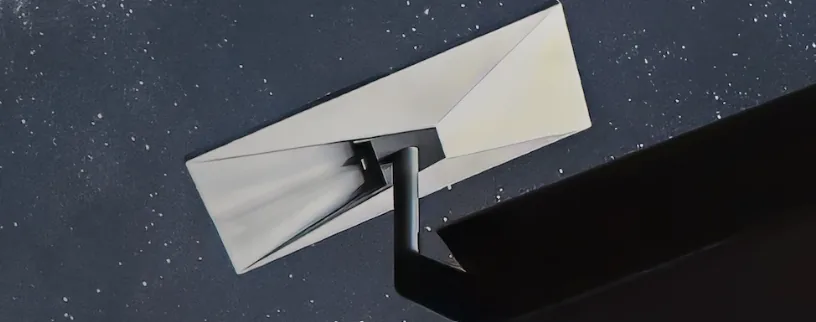
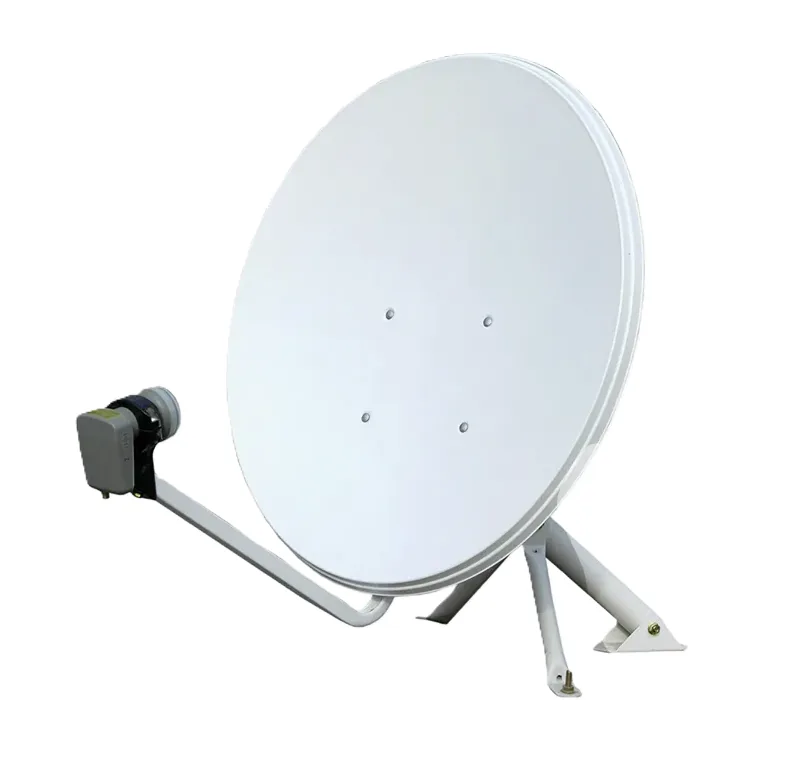

Kein Kabelanschluss, lahmes Internet oder schlechter TV-Empfang? Wir prüfen Ihren Standort, montieren, verkabeln und richten alles ein. Sie bekommen eine Anlage, die läuft. Für Privatpersonen und Unternehmen.
Fixpreisangebot innerhalb von 24 Stunden. Kostenlos und unverbindlich.
Ihre Ausgangslage
Die Leitung ist zu langsam, der Handyempfang reicht nicht, und im Haus kommt vom WLAN auch nicht überall etwas an. Wir prüfen, welche Lösung für Ihr Gebäude sinnvoll ist. Starlink ist nicht überall die beste Wahl, und wir sagen Ihnen ehrlich, was bei Ihnen passt.
In drei Schritten zur Antwort
Oft hilft weder Glasfaser noch der Handyempfang weiter. Schicken Sie uns Ihre Adresse, wir prüfen für Sie, was dort möglich ist: ob Starlink verfügbar ist, welche Lösung die höchste Datenrate bringt und mit welchem Aufwand die Montage verbunden ist. Sie müssen nichts selbst recherchieren.
Schicken Sie uns Ihre Adresse. Ein Foto vom gewünschten Montageort hilft, ist aber kein Muss. Es dauert eine Minute.
Jetzt Anfrage senden →Wir klären, ob Starlink an Ihrer Adresse verfügbar ist, welche Datenrate möglich ist und wie Festnetz und Mobilfunk dort abschneiden. Dazu bewerten wir die Sicht zum Himmel.
Sie erfahren, welche Datenrate höchstens möglich ist, welche Lösung wir empfehlen und wie es weitergeht. Ein seriöses Angebot erstellen wir Ihnen nach Besichtigung oder wenn uns ausreichend Informationen vorliegen.
Alle Geschwindigkeiten sind Höchstwerte der Anbieter („bis zu“). Was tatsächlich ankommt, hängt von Tarif, Standort und Auslastung ab.
Welche Lösung passt zu mir?
Die beste Wahl, wenn sie verfügbar ist.
Gut, wenn der Empfang am Standort passt.
Die Lösung, wenn nichts anderes reicht.
Was wir für Sie übernehmen
Selbst montieren, lange nach dem besten Platz suchen und am Ende hakt es doch? Das können Sie sich sparen: Wir übernehmen alles, vom Standortcheck bis zum Verbindungstest. Einmal richtig gemacht, läuft Ihr Internet jahrelang stabil.
Wir suchen den Platz mit freier Sicht zum Himmel und prüfen Bäume, Dachvorsprünge und Nachbargebäude. Davon hängt die Qualität Ihrer Verbindung ab.
Mehr erfahren ↓Auf Dach, Fassade oder freistehendem Mast. Sicher verankert, wetterfest und passend zu Wind und Untergrund.
Mehr erfahren ↓Saubere Kabelführung vom Terminal bis zum Router. Innerhalb der Wand oder außen, mit dichter Durchführung und Abdichtung.
Mehr erfahren ↓Wir nehmen Starlink in Betrieb, richten den Router ein und testen die Verbindung. Danach erklären wir Ihnen kurz alles Wichtige.
Mehr erfahren ↓Mesh-WLAN, Access Points oder Netzwerkkabel, damit das Internet auch im Obergeschoss und im Nebengebäude ankommt.
Mehr erfahren ↓Starlink läuft schlecht oder bricht ab? Wir prüfen Standort, Hindernisse, Kabel und Router. Auch bei Anlagen, die nicht von uns stammen.
Am Land, im Ferienhaus oder auf der Baustelle ohne brauchbares Internet? Starlink von SpaceX liefert Highspeed-Internet via Satellit. Überall dort, wo DSL und Glasfaser nicht hinkommen. Wir übernehmen die komplette Installation: Standortwahl, Montage, Verkabelung und WLAN-Einrichtung. Ist an Ihrem Standort doch Glasfaser verfügbar? Dann beraten wir Sie ehrlich. Auch die Glasfasertechnik übernehmen wir selbst.

Der zweite Teil, der oft vergessen wird
Viele kaufen eine bessere Leitung und wundern sich, dass es im Obergeschoss, in der Werkstatt oder im Stall trotzdem hakt. Dann liegt es nicht am Internet, sondern daran, wie es im Gebäude verteilt wird.
Stahlbeton, Ziegel und Fußbodenheizung schlucken das WLAN-Signal.
Ein Router im Erdgeschoss reicht selten bis ins Dachgeschoss.
Werkstatt, Stall, Hofladen oder Garage liegen oft außer Reichweite.
Hinter dem Schrank oder im Keller geht Leistung verloren.
Unsere Lösungen
Für Wohnhaus und Büro
Mehrere Geräte bilden ein gemeinsames Netz. Sie gehen durchs Haus und bleiben verbunden, ohne etwas umzuschalten.
Wenn es richtig stabil sein soll
Wir verlegen Netzwerkkabel und setzen die Sender dort, wo sie gebraucht werden. Das ist die stabilste Lösung für größere Häuser und Betriebe.
Für Hof und Nebengebäude
Werkstatt, Stall oder Hofladen bekommen per Kabel Anschluss ans Netz. Auch mit Glasfaser, wenn die Strecke länger ist.
Reine WLAN-Hilfe ohne neues Internet machen wir auch. Mehr dazu unter EDV & IT-Service.
Montagearten
Wir montieren Ihr Starlink-Terminal sicher und sauber, auf Schrägdach, Flachdach, an der Fassade oder auf einem eigenen Mast. Egal wie der Standort aussieht.
Sichere Befestigung mit wetterfester Dachhalterung und dichter Kabeleinführung.
Auf Flachdach mit Standrohr oder an der Außenwand. Platzsparend, sicher und optisch sauber.
Erdmast im Garten oder auf Terrasse. Ideal wenn Dach oder Wand nicht zugänglich sind.
Unser Ablauf
Schnell und sauber. So läuft Ihre Starlink-Installation ab.
Adresse und Foto schicken, Rückmeldung innerhalb von 24 Stunden
Prüfung des idealen Montageplatzes vor Ort
Montage, Verkabelung, Router und WLAN einrichten, Verbindung testen
Einschulung, Test und Dokumentation
Schicken Sie uns kurz Ihre Adresse und ein Foto des Montageorts. Wir melden uns innerhalb von 24 Stunden bei Ihnen. Kostenlos und unverbindlich.
Kostenloses Angebot einholen →Lieber persönlich? 📞 +43 676 6520263

Auch im Angebot
Neben Starlink montieren und richten wir auch klassische SAT-Anlagen für Fernsehempfang aus, vom Einzelanschluss bis zur Anlage für mehrere Wohnungen. Ohne laufende Kosten für den Empfang der freien Programme.
Wir begleiten Sie von der Beratung bis zur Wartung: Standortwahl, Beschaffung aller benötigten Produkte, Montage, Kabelverlegung, WLAN-Einrichtung und späterer Service. Sie müssen sich um nichts selbst kümmern. Die Kosten hängen von den Gegebenheiten vor Ort ab, nach einer Besichtigung oder ausreichenden Informationen erstellen wir Ihnen ein seriöses Angebot.
Das prüfen wir gerne für Sie. Schicken Sie uns Ihre Adresse, wir klären die Verfügbarkeit und sagen Ihnen, welche Datenrate dort möglich ist. Ob der Montageort für guten Empfang geeignet ist, sehen wir uns mit Ihnen an. Entscheidend ist freie Sicht zum Himmel.
Ja. Wir montieren auf Flach- und Schrägdach, an der Wand oder auf einem freistehenden Mast. Welche Variante bei Ihnen sinnvoll ist, hängt vom Gebäude und von der Sicht zum Himmel ab.
Wir führen das Kabel sauber vom Montageort bis zum Router, innerhalb der Wand oder als Außeninstallation, inklusive Durchführung und Abdichtung.
Ja, wir übernehmen die Router- und WLAN-Konfiguration. Wie sich das mit Ihrem bestehenden Netzwerk verbinden lässt, besprechen wir vorab bei der Beratung.
Je nach Tarif, Standort und optimaler Position der Antenne sind bis zu 600 Mbit/s im Download möglich. Genug für Streaming, Homeoffice und Videokonferenzen. Entscheidend ist freie Sicht zum Himmel; genau das prüfen wir beim Standortcheck.
Ja. Auf unsere Montage- und Installationsarbeiten gilt die gesetzliche Gewährleistung, bei Verbrauchern 2 Jahre. Für die Geräte selbst gelten zusätzlich die Bedingungen des jeweiligen Herstellers.
Wir sind vor allem in Wien, Niederösterreich und dem Burgenland im Einsatz. Auch im übrigen Österreich sind wir für Sie da, das besprechen wir gerne auf Anfrage. Fragen kostet nichts.
Unsere Arbeitsleistung beginnt ab 300 €. Das gilt für den einfachsten Fall, etwa ein Starlink-Terminal auf einem Ständer im Garten mit kurzem Kabelweg. Bei Dach, Mast, Kabel durch die Wand oder einer längeren Anfahrt wird es mehr, deshalb gibt es keinen Einheitspreis. Den genauen Preis nennen wir Ihnen nach einer Besichtigung oder wenn uns ausreichend Informationen vorliegen. Die Beschaffung der benötigten Produkte übernehmen wir auf Wunsch ebenfalls.
Wir prüfen vor Ort den Standort und die freie Sicht zum Himmel, montieren die Halterung, verlegen das Kabel, richten Starlink und WLAN ein und testen die Verbindung. Danach erklären wir Ihnen kurz alles Wichtige. Den Aufwand besprechen wir vorher mit Ihnen.
Ja, das ist möglich. Starlink liefert eine Standardhalterung mit. Sinnvoll ist ein Fachmann dort, wo es schwieriger wird: Dach oder Mast in größerer Höhe, Kabel durch die Wand, mehrere Gebäude. Dabei geht es auch um Ihre Sicherheit und um dichte Durchführungen. Wir montieren das dann für Sie.
Meist liegt es an dicken Wänden und Decken, an großen Entfernungen oder daran, dass der Router ungünstig steht. Eine schnellere Internetleitung ändert daran nichts. Mit Mesh-WLAN oder Access Points an den richtigen Stellen, bei Bedarf mit Netzwerkkabel, kommt das Internet überall an. Wir sehen uns das vor Ort an und sagen Ihnen, was nötig ist.
Ja. Je nach Entfernung verbinden wir das zweite Gebäude per Netzwerkkabel oder bei längeren Strecken mit Glasfaser und richten dort ein eigenes WLAN ein. Die Lösung hängt von Entfernung und Gelände ab, deshalb schauen wir sie uns an.
Die Befestigung wählen wir passend zu Untergrund, Wind und Last (Dach, Wand oder Mast) und legen sie beim Standortcheck fest. Starker Schneefall kann den Empfang vorübergehend stören. Das liegt an Starlink selbst und nicht an der Montage.
Das hängt vom Montageort (Dach, Wand oder Mast) und dem Kabelweg ab. Schicken Sie uns kurz Ihre Adresse und ein Foto des Standorts. Nach einer Besichtigung oder mit ausreichenden Informationen erstellen wir Ihnen ein seriöses Angebot. Kostenlos und unverbindlich.
Bei Eingriffen in Fassade oder Dach sollte die Hausverwaltung zustimmen. Wir beraten Sie dazu und montieren auf Wunsch mietfreundlich. Etwa am Balkongeländer oder auf einem freistehenden Mast, ganz ohne Bohren in die Fassade.
Ja. Signalmessung, Neuausrichtung, LNB-Tausch oder Fehlersuche. Wir bringen auch Anlagen wieder zum Laufen, die nicht von uns installiert wurden.
Kostenlos & unverbindlich
Schicken Sie uns Ihre Adresse. Wir prüfen, welche Datenrate dort möglich ist, und melden uns innerhalb von 24 Stunden mit dem Ergebnis. Ein Angebot erstellen wir nach Besichtigung oder wenn uns ausreichend Informationen vorliegen.